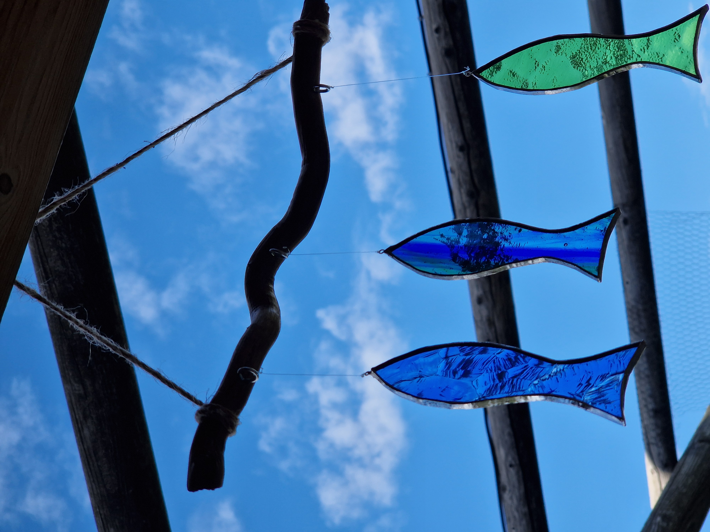

Jeune fille à la tresse
Jeune fille à la tresseŒuvres choisies
Toutes mes créations sont faites à la main.
Chaque pièce est unique, par sa forme, par les couleurs, par le choix des verres.



Œuvres choisies
Toutes mes créations sont faites à la main.
Chaque pièce est unique, par sa forme, par les couleurs, par le choix des verres.
